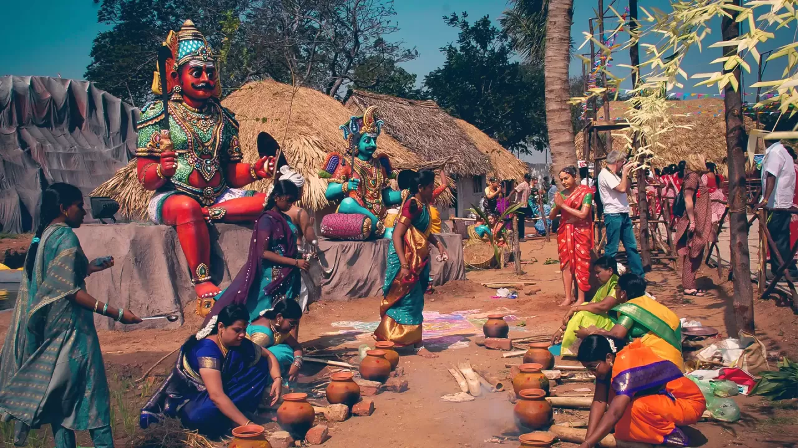

SOUTH Indian Festivals
Click on Back to Home Page
Place: Kerala
Time: It is celebrated at the beginning of the first month of the Malayalam calendar, Chingam. In the Gregorian Calendar, it usually falls in the months of August or September.
Dates: 20th August - 31st August, 2023.
The harvest festival of Kerala, Onam is celebrated across religions and communities with equal enthusiasm. It was declared the national festival of Kerala in 1961. The carnival of Onam ranges from four to ten days. The first and the tenth day, Atham and Thiruonam respectively, are the most significant days. The festival is celebrated to welcome the King Mahabali who, according to the popular legend, visits his people annually on the festival of Onam.
|
Ugadi translates into the beginning of a new age. The festival welcomes the Telugu New Year, the beginning of the Hindu lunar calendar. The festival is celebrated with harmony and joy with nature marking the beginning of a new year when the buds bloom and blossom.
Ugadi celebrates the aroma of raw mangoes, a key ingredient of the Ugadi Pachadi, a unique festive dish of the Telugu community. The culinary delights of this festival include Atukulu Payasam, Bellam Garelu, Semiya Payasam, Pappu Pulusu and Vankaya Batani. The Ugadi Pachadi is a combination of six different flavours, from sweet to bitter, symbolic of the different phases of life |
 This annual celebration of the city of Madurai is the longest festival in the world, celebrated for a month. The first fifteen days of the festival celebrate the coronation of Goddess Meenakshi and the next fifteen days celebrate the journey of Lord Azhagar from Kallazhagar temple in Alagar Koyil to Madurai.
This festival attracts one million devotees and tourists from across the national borders. The festivities include flag hoisting by the chief priest, the coronation ceremony and the grand celebration of the marriage of Goddess Meenakshi with Lord Shiva. The ceremonies include a procession which attracts a large number of people. This annual celebration of the city of Madurai is the longest festival in the world, celebrated for a month. The first fifteen days of the festival celebrate the coronation of Goddess Meenakshi and the next fifteen days celebrate the journey of Lord Azhagar from Kallazhagar temple in Alagar Koyil to Madurai.
This festival attracts one million devotees and tourists from across the national borders. The festivities include flag hoisting by the chief priest, the coronation ceremony and the grand celebration of the marriage of Goddess Meenakshi with Lord Shiva. The ceremonies include a procession which attracts a large number of people.
|
| One of the oldest festivals of Karnataka, Karaga is celebrated in honour of Goddess Shakti at the famous Dharmarayaswamy temple in Bangalore. The festival showcases the rich cultural heritage of Karnataka. It is an auspicious festival of the Thigala community who according to the popular legend was part of a mythological army who helped Draupadi in her fight against a demon. Draupadi took the form of Shakti and gathered an army of Veerakumaras, the ancestors of the Thigala community.
The festival is celebrated for nine days with splendid rituals and processions. The Karaga is an earthen pot that supports a floral pyramid and a figure of the goddess. The procession starts at the Dharmarayaswamy temple with the Karaga carrier dressed in women's attire, surrounded by a number of Veerakumaras carrying uncovered swords. |
January is a special month as it opens the window to a new and fresh year. It is even more special for the people of Tamil Nadu as they welcome their harvest festival, Pongal. The four-day event that is dedicated to the Sun God marks the Sun’s journey northward, Uttarayan. Pongal is usually celebrated between 13 and 16 January. The four days - Bhogi Pongal, Thai Pongal, Mattu Pongal and Kaanum Pongal - have their separate significance. Thai Pongal on January 14 corresponds with the Makar Sankranti, the harvest festival that is celebrated across India under various regional names.
|